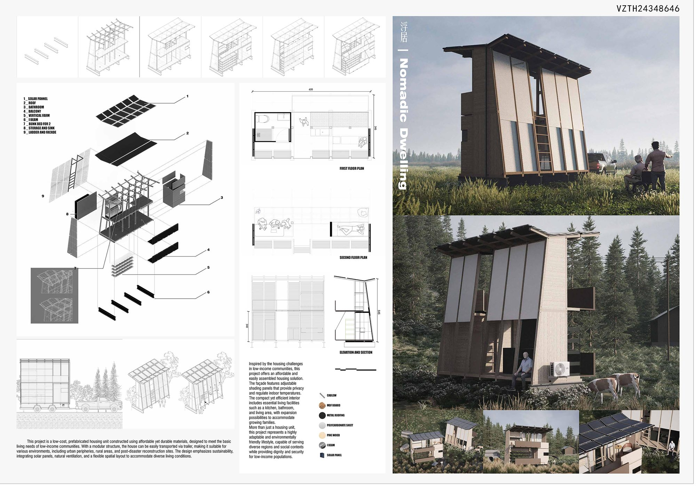

A compact dwelling that stacks living, sleeping, and service into a slender vertical volume, lifting the footprint off the forest floor. The study pairs a clear exploded structure with a sited render — a small object designed as both a tectonic exercise and a place to inhabit.
一座将起居、睡眠与设备层叠进纤细竖向体量的微型住宅，把占地从林地抬起。研究以清晰的爆炸结构搭配场地渲染——一个小尺度的物件，既是建构练习，也是可栖居的场所。

